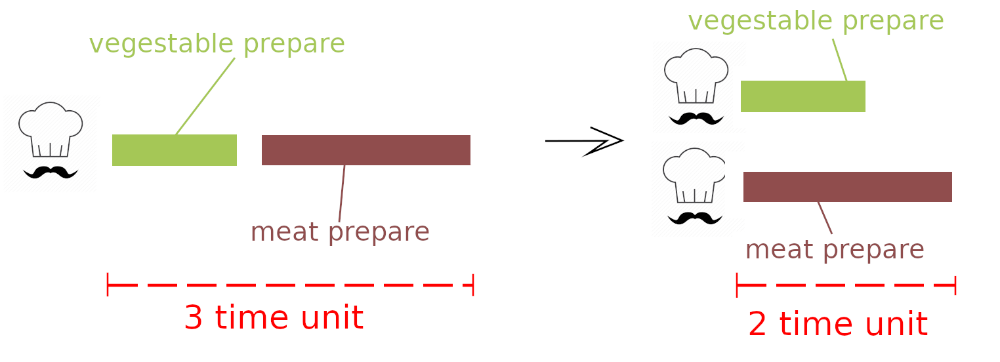

Sorry but JavaScript have nothing to do with multi-thread
Think about it like you have dish to prepare. But instead of prepare it yourself, you have someone lend you a hand. The dish will be complete in a shorter period of time when you do it alone
In short, you do several stuff simultaneously by running those stuff in several thread instead of run it one by one sequentially
It's almost obvious that multi-thread make things faster
For example you have a unit of work that include two separate task says, A and B:
So the best we can get out of it is to reduce the required time by a half (when A and B take the same amount of time to run)
There are several issue you need to solve before jumping in and turn a block of normal code to multi-thread code
| Code in both thread | ||
while( ! stack.isEmpty() ){
String url = stack.pop();
...
}
|
||
| Execution in thread A | Debug | Execution in thread B |
| !stack.isEmpty() -> true | stack.size = 1 | ... |
| ... | stack.size = 1 | !stack.isEmpty() -> true |
| stack.pop() | stack.size = 1 | ... |
| ... | stack.size = 0 | stack.pop() |
| ... | stack.size = 0 | EmptyStackException... |
| Code in both thread | ||
while( ! stack.isEmpty() ){
String url = null;
synchronized(...) {
if ( stack.isEmpty() ) {
break;
}
url = stack.pop();
}
...
}
|
||
| Execution in thread A | Debug | Execution in thread B |
| !stack.isEmpty() -> true | stack.size = 1; lock free | ... |
| ... | stack.size = 1; lock free | !stack.isEmpty() -> true |
| gain lock -> success | stack.size = 1; lock free | ... |
| ... | stack.size = 1; lock -> A | gain lock -> failed |
| stack.isEmpty() -> false | stack.size = 1; lock -> A | ... |
| ... | stack.size = 1; lock -> A | waiting on the lock |
| stack.pop() | stack.size = 1; lock -> A | ... |
| ... | stack.size = 0; lock -> A | waiting on the lock |
| release lock | stack.size = 0; lock -> A | ... |
| ... | stack.size = 0; lock free | gain lock -> success |
| ... | stack.size = 0; lock -> B | stack.isEmpty() -> true |
| ... | stack.size = 0; lock -> B | break |
| ... | stack.size = 0; lock -> B | release lock |
If you already prepare yourself to face the above problems then it's time to create your own piece of multi-thread code
It quite easy that just solve the above problems, one by one. Others stuff have library supported :P
The action that storing data to speed up the later access. The data might be result of earlier computation or other low speed accesss data storage
Retrieve the result from cache will be faster than re-compute the result. In case, the cache store in higher speed access storage then the access time will be reduce
Remote Procedure Call (RPC) is a protocol that one program can use to request a service from a program located in another computer on network without having to understand the network's details.
gRPC is a RPC framework
The payload size for each call will be smaller -> reduce the time that tranfer payload over network